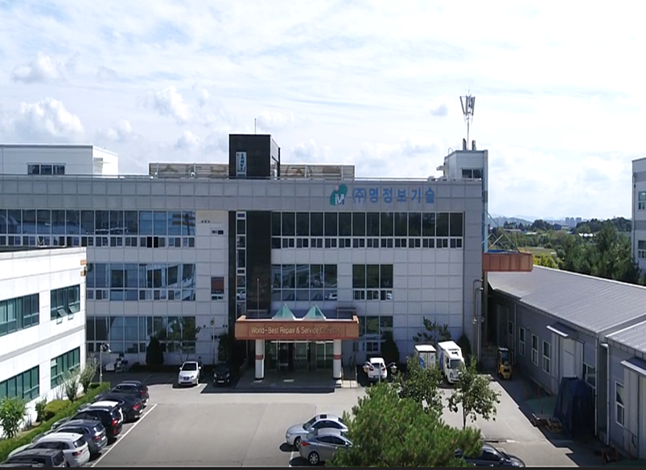

1990년 설립 · 36년 업력
1990. 6. 20 설립 이후 2026년 기준 36년간 축적된 현장 경험을 바탕으로 기업과 기관, 개인 고객의 데이터 및 디지털 기록 관련 업무를 수행합니다.
COMPANY OVERVIEW · MYUNG INFORMATION TECHNOLOGY
1990년 설립된 (주)명정보기술의 기업 역사와 주요 사업 분야, 오창 본사 및 9개 거점 시설, 명디지털포렌식센터 상담 창구 정보를 안내합니다.
CORPORATE PROFILE · SINCE 1990
(주)명정보기술은 1990년 6월 20일 설립되어 2026년 기준 36년의 업력을 이어온 데이터·디지털 분석 전문 법인이며, 전문 분석·조사 창구인 명디지털포렌식센터(MYUNG DIGITAL FORENSIC CENTER)를 운영하고 있습니다.
1990. 6. 20 설립 이후 2026년 기준 36년간 축적된 현장 경험을 바탕으로 기업과 기관, 개인 고객의 데이터 및 디지털 기록 관련 업무를 수행합니다.
2026년 기준 누적 사고조사·복구 200,000건(개별 고객 수가 아닌 사고조사 및 복구 수행 합산 기준)과 9개 거점 네트워크를 운영하고 있습니다.
안내: 본 페이지의 기업 기본 정보와 주요 지표는 확인된 자료만 반영했으며, 확인되지 않은 세부 사항은 임시 문구로 표기했습니다. 이 페이지는 시안입니다.

HISTORY & MILESTONES
1990년 창립부터 2026년 현재까지 이어온 주요 발자취와 공식 확인 지표입니다.
일본 팍스콘 레스큐에 데이터복구 기술이전
정부, 정보기관 데이터 복구 교육 진행
천안함 CCTV 영상 데이터 복구 수행
우수 숙련기술인 국민스타 선정
세월호 CCTV 영상 데이터 복구 수행
말레이시아 사이버보안 기관 데이터복구 기술이전
주요 연혁 중 일부를 발췌했습니다. 2026년 기준 업력 36년, 누적 사고조사·복구 200,000건(개별 고객 수가 아닌 합산 기준), 9개 거점입니다.
BUSINESS DOMAINS
(주)명정보기술 통합 홈페이지는 하드웨어·장비 공급과 수리, 데이터 복구부터 디지털포렌식, 침해사고 조사 및 기업 보안 관리까지 유기적으로 연결된 기술 영역을 다룹니다.
PC·저장매체, 스마트폰, 메신저와 음성·영상 기록을 분석해 사건과 관련된 사실관계를 확인합니다.
랜섬웨어, 해킹·악성코드, 개인정보 사고 조사와 원격 보안 점검, 퇴사자 관리, 보안 인프라 구축을 지원합니다.
저장매체 및 업무 시스템의 손상·삭제 상황에서 데이터 복구 가능성을 진단하고 복구 절차를 진행합니다.
산업·기업 환경의 장비 및 부품 이상 상태를 점검하고 수리 절차를 안내합니다.
기업 운영과 데이터 관리, 분석 환경에 필요한 제품 및 장비 구성을 소개합니다.
의뢰 전 준비 사항과 접수 절차, 상담 방법을 고객 지원 창구에서 안내합니다.
FACILITIES & NETWORK
충북 청주 오창 본사와 전국 거점의 주소와 전화번호를 안내합니다.

본사는 충북 청주시 청원구 오창읍 과학산업3로 168에 있으며, 2003년 오창과학산업단지 사옥 이전과 함께 클린룸 시설을 운영해 왔습니다. 클린룸 등급과 보유 장비 등 세부 정보는 확인 중입니다.
| 거점 | 주소 | 전화 |
|---|---|---|
| 청주본사 | 충북 청주시 청원구 오창읍 과학산업3로 168 | 043-218-8400 |
| 강남지점 | 서울특별시 강남구 테헤란로 83길 32 나라키움삼성동빌딩 4층 401호 | 02-561-1664 |
| 구로지점 | 서울특별시 구로구 디지털로 273 에이스트윈타워2차 909호 | 02-2109-5830 |
| 용산지점 | 서울 용산구 청파로 74 전자랜드 신관 광장층 A-3호 | 02-703-8500 |
| 수원지점 | 경기 수원시 영통구 신원로 306 이노플렉스1동 710호 | 031-216-8320 |
| 대전지점 | 대전 서구 둔산대로 117번길 44 엑스포오피스텔 201호 | 042-484-5111 |
| 대구지점 | 대구광역시 북구 유통단지로 50, 409호 (전자관 맞은편 우리은행 4층) | 053-604-5878 |
| 부산지점 | 부산광역시 부산진구 중앙대로615 평광빌딩 10층(서관) | 051-895-7722 |
| 광주지점 | 광주광역시 서구 내방로 360, 2층 | 062-372-2213 |
방문 전에는 대표 상담 창구(1577-4872)로 대상 기기와 방문 가능 여부를 먼저 확인해 주세요.
기업 고객의 데이터와 업무 환경을 다루는 만큼 확인된 정보만 안내하고, 확정되지 않은 내용은 임시 문구로 표시합니다.
CORPORATE REGISTRATION VS. CONSULTATION DESK
행정·계약 기준의 법인(본사) 정보와 서비스 의뢰·상담을 위한 센터 연락처는 역할이 구분되어 있으니 용도에 맞게 확인해 주십시오.
주의: 대표자(이명재)·사업자등록번호(315-81-04436)·본사 주소(충북 청주시 청원구 오창읍 과학산업3로 168)는 (주)명정보기술 법인 및 본사 기준 정보이며, 서비스 문의 및 사건 접수 상담은 명디지털포렌식센터 대표 상담번호(1577-4872, 평일 09:00 – 18:00)로 운영됩니다.